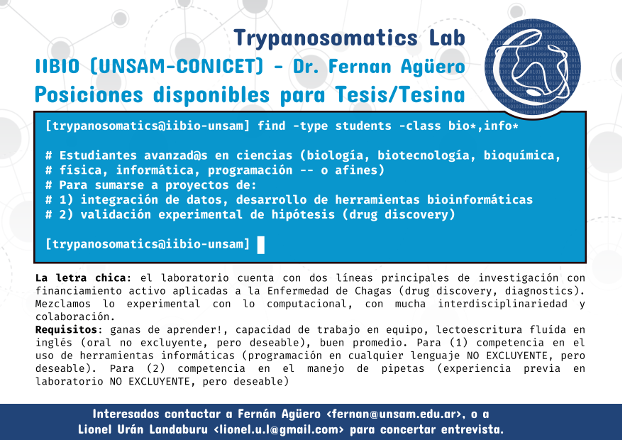
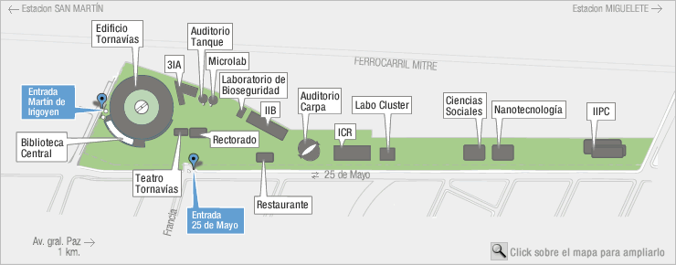

POSICIONES DISPONIBLES PARA TESIS/TESINA
INSTITUTO DE INVESTIGACIONES BIOTECNOLÓGICAS (IIBIO)

Tenemos abiertas posiciones en el laboratorio para estudiantes avanzad@s en
ciencias (biología, biotecnología, bioquímica, física, informática,
programación o afines) que quieran hacer investigación para una Tesina de Grado o Tesis de Doctorado en:
-
integración de datos, data mining, desarrollo de herramientas
bioinformáticas
-
validación experimental de hipótesis (drug discovery)
La letra chica: el laboratorio cuenta con dos líneas principales de
investigación con financiamiento activo aplicadas a la Enfermedad de Chagas
(drug discovery / diagnostics). Mezclamos lo experimental con lo
computacional con mucha interdisciplinariedad y colaboración.
Requisitos: ganas de aprender!, capacidad de trabajo en equipo, lectroescritura fluída en inglés (oral no excluyente, pero deseable), buen promedio. Para (1) competencia en el uso de herramientas informáticas (programación en cualquier lenguaje NO EXCLUYENTE pero deseable). Para (2) competencia en el manejo de pipetas (experiencia previa en laboratorio NO EXCLUYENTE, pero deseable) .
Publicaciones recientes:
- FastqCleaner: an interactive Bioconductor application for
quality-control, filtering and trimming of FASTQ files. Leandro G Roser,
Fernán Agüero, Daniel Sánchez (2018). bioRxiv
393140;
http://dx.doi.org/10.1101/393140
- Novel scaffolds for inhibition of Cruzipain identified from
high-throughput screening of anti-kinetoplastid chemical boxes.
Salas-Sarduy E et al (2017) Scientific reports 7: 12073. Full
Text
- A multilayer network approach for guiding drug repositioning in neglected
diseases. Berenstein AJ, Magariños MP, Chernomoretz A, Agüero F (2016).
PLOS Neglected Tropical Diseases 10: e0004300. Full
Text
- Neglected Tropical Diseases in the Post-Genomic Era. Buscaglia CA,
Kissinger JC, Agüero F. (2015) Trends in Genetics 31: 539-555.
Full Text
- Towards high-throughput immunomics for infectious diseases: use of
next-generation peptide microarrays for rapid discovery and mapping of
antigenic determinants. Carmona SJ et al. (2015). Mol Cell
Proteomics 14: 1871. Full
Text
- Diagnostic peptide discovery: prioritization of pathogen diagnostic
markers using multiple features. Carmona SJ et al. (2012). PLOS One 7:
e50748. Full Text
- TDR Targets: a chemogenomics resource for neglected diseases. Magariños
MP et al (2012). Nucleic Acids Research 40: D1118. Full
Text
- Identification of attractive drug targets in neglected-disease pathogens
using an in silico approach. Crowther GJ et al. (2010). PLOS
Neglected Tropical Diseases 4: e804. Full
Text
- Genomic-scale prioritization of drug targets: the TDR Targets database.
Agüero F et al. (2008). Nature Reviews Drug Discovery 7: 900. Full
Texta
Otras Publicaciones
Si estás interesad@, escribinos a fernan@unsam.edu.ar o a lionel.u.l@gmail.com
Donde estamos
El Instituto de Investigaciones Biotecnológicas (IIB) está dentro del nuevo
campus Miguelete de la UNSAM, a cuadras de la Av. Gral Paz y con conexión
directa y rápida mediante colectivos o
tren hacia Retiro (Ferrocarril
Mitre), Puente Saavedra, Liniers y barrios cercanos (Vicente Lopez,
Saavedra, Nuñez, Belgrano, Villa Urquiza, Devoto, Villa del Parque).
Plano del campus Miguelete:

Foto aérea del IIB en el campus Miguelete: